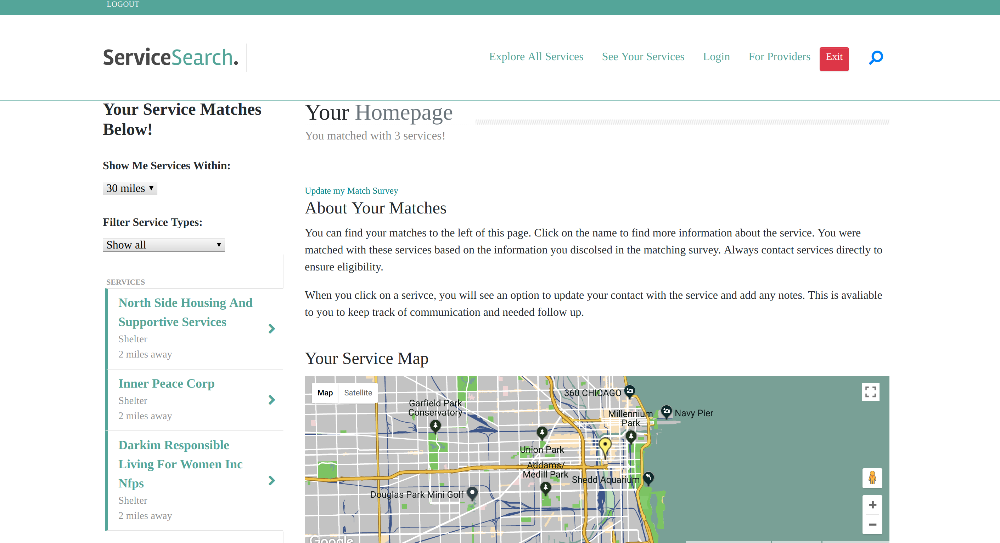

Welcome!
Thank you for taking the time to learn a bit more about me. I have a diverse set of experiences most recently, diving into the amazing field that is software development! Please feel free to reach out and connect with me if you see anything here you find interesting or know of any opportunities that will fit my skills and experiences. I look forward to meeting you soon!
What I Do
Software Developer
Software development has been a long time interest of mine. The problem solving and creative thinking involved in coding gives me the opportunity to stretch my mind in ways I had never been challenged before. I was able to fully immerse myself in the field when I joined Actualize Coding Bootcamp in December of 2017. This experience solidified my passion for software development as well as taught me the skills and tools needed to be successful in the field!Since then, I have been continuing to build my skills and involve myself in various software development projects. Most recently, I am working as a Technology Coordinator at the Chicago Literacy Alliance (CLA) where I have developed, implemented, and maintained their Salesforce system as well as designed and developed their member booking and event portal. I have had a great experience at the CLA and had the opportunity to make a large impact in a short amount of time!
Currently, I am seeking new opportunities to join a development team that values mentorship, innovation, team collaboration, and DRY code. I know I will add immense value and will tackle any challenge that comes my way.

Non-Profit Professional
I graduated from the University of Illinois at Urbana-Champaign with my BA in Psychology. From there, I was invited to participate in the New Sector Alliance Fellowship where I was matched and eventually hired at a non-profit student success program serving as a Recruitment Coordinator and Student Adviser for two years. I joined the CLA team in January of 2019, combining my passions for technology and non-profit service work. I have loved the opportunity to use my software development skills as a tool to positively impact the CLA as well as it members organizations and help make sure they can continue to serve their clients. I am incredibly excited about civic tech and want to use technology as a tool to empower and support others!Portfolio
Chicago Literacy Alliance Member Portal
I redesigned and built the Chicago Literacy Alliance Member Portal. After gathering feedback from the CLA Membership Team, I incorporated new design and UI elements on the home page giving users the ability to see the most recent CLA announcements, upcoming events, and their upcoming bookings. I redesigned the room booking pages using the Bootstraps full calendar plugin as well as added room searching and filtering functionality. I used the Nexudus API to pull room booking, event, and CLA member information. For this project, I worked in JavaScript, HTML, CSS and Liquid Template Notation.
Bipronum
I worked as a Full-Stack Developer on Bipronum. Bipronum is a workflow project management web application that allows organizations to track the progress and life cycle of a project - increasing productivity and transparency. I worked in a team of 5 developers and built new UI components as well as worked on Redux implementation. This is built in JavaScript using the React Redux framework and libraries.

BUCKIT
I worked as a Full-Stack Developer on the BUCKIT application within a three person team of developers. BUCKIT is a social network and cataloging app that allows travelers to share about their experiences abroad and organize lifetime travel goals, while providing integrated planning tools to help convert the mass of online information into digestible knowledge & personalized travel plans. We reconstructed and rebuilt the application from scratch to incorporate new frameworks. This app is built in PHP with the Zend Framework and in JavaScript utlizing React.

ServiceSearch
I personally built a fullstack web application that matches a user with law, mental health and shelter social services that they qualify for based on over 10 matching criteria. I utilized the City of Chicago API to access local social service information and the Google Maps API to allow the user to access directions directly in the application and show the user their location in relation their service matches in their personalized user page. The app uses Ruby on Rails, JavaScript, CSS, HTML PostGres and VueJS..
Other Things I Do
I like to consider myself a life long learner - due to this, I have aquired an assortment of skills and hobbies I enjoy partaking in. Check it out!